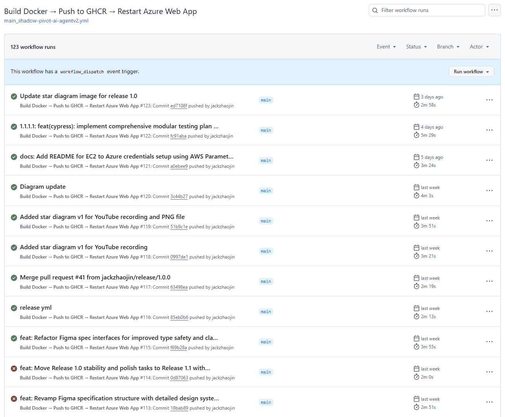
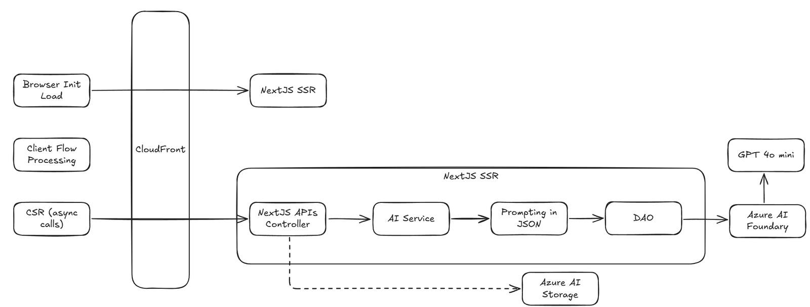

First published as a LinkedIn video on July 7, 2025. Rewritten for this site in October 2026. Code: shadow-pivot-ai-agentv2 at 75de1c3, the commit where I added these diagrams.
What changed since July 2025
The public copy is down. On October 3, 2026, ai-ui-agent-2025.experiencereinvented.com returned a 504 error from CloudFront. The repo, both workflows and the v1.0.0 release are still there, so everything below can be read in the code.
1. CI/CD: two pipelines, picked by the branch
I invested in CI/CD from the first day, because AI work has to land somewhere real. You need to deploy to the cloud and have people look at it. Have your mom try it. That's hard when everything only works on your laptop, and it's hard for the AI to validate its own code too.
The repo has two GitHub Actions workflows, and the branch you push decides which one runs. A push to main builds a Docker image, pushes it to GitHub Container Registry as :latest, logs in to Azure and restarts the Azure Web App, which pulls the new image. A push to a release/ branch builds versioned images and a GitHub release, and restarts nothing. Try a few branch names:
Push to this branch
Where it lands
release/1.0.0 runs the release workflow: it builds :1.0.0 and :release-latest, creates GitHub release v1.0.0 and restarts nothing. main runs the main workflow and restarts the Azure Web App. Any other branch runs neither.
Build Docker → Push to GHCR → Restart Azure Web Appmain_shadow-pivot-ai-agentv2.yml · on push to main
Runs on every push to main.
- Build the Docker image and push
:latest - Log in to Azure with OpenID Connect
- Restart the Web App so it pulls the new image
Build and Push Release to GHCRrelease.yml · on push to release/*
Runs on every push to a release/ branch.
- Extract the version from the branch name
- Validate it as #.# or #.#.#
- Build and push
:versionand:release-latest - Create the GitHub release. No Azure restart.
The release workflow takes the version straight from the branch name and refuses anything that isn't #.# or #.#.#. That's the check the lab runs:
- name: Extract release version from branch name id: extract_version run: | # Extract version from branch name (e.g., release/3.4 -> 3.4, release/3.4.1 -> 3.4.1) VERSION=$(echo ${GITHUB_REF#refs/heads/release/}) echo "version=$VERSION" >> $GITHUB_OUTPUT echo "Release version: $VERSION" - name: Validate version format run: | VERSION="${{ steps.extract_version.outputs.version }}" if [[ ! $VERSION =~ ^[0-9]+\.[0-9]+(\.[0-9]+)?$ ]]; then echo "❌ Invalid version format: $VERSION" echo "Expected format: #.# or #.#.# (e.g., 3.4 or 3.4.1)" exit 1 fi echo "✅ Valid version format: $VERSION"Release 1.0 went out exactly this way: the release/1.0.0 branch, merged as pull request #41, produced the v1.0.0 release on June 17, 2025. One small detail I like in the main workflow: the Docker layer caching came from a GitHub Copilot recommendation, and the comment in the file says so.


2. Service authentication: five actors, three kinds of credential
For AI to be useful it needs access to real environments, the same as any developer. On this project five different actors reach Azure, and each one gets in its own way:
![Diagram titled Enabling Agentic AI Agents with Proper Azure Role-Based Access Control. Rows from actor to auth to Azure identity to resource: local user and local GitHub Copilot use az login (passwordless) as a user identity to reach storage and AI Foundry; OpenAI Codex uses tenant, ID and secret as a service principal with a timed secret; GitHub Action uses OIDC (passwordless) as a federated service principal to reach the Azure Web App; the Azure Web App uses a system managed identity (passwordless); EC2 behind CloudFront, release only, uses tenant, ID and secret as a service principal with a timed secret.](images/board-auth.png)
| Actor | Credential | Reaches |
|---|---|---|
| Me and GitHub Copilot, locally | az login, my own user, no password in the app | Storage and AI Foundry |
| OpenAI Codex, in the cloud | Service principal, tenant and client ID plus a secret that expires | Storage and AI Foundry |
| GitHub Actions | OpenID Connect to a federated service principal, no secret | The Azure Web App, to restart it |
| Azure Web App | System managed identity, no secret | Storage and AI Foundry |
| EC2, release only | Service principal with a secret that expires | Storage and AI Foundry |
The app code doesn't care which one it is. Every Azure call goes through DefaultAzureCredential, here asking for a token for the AI Foundry endpoint:
export function getAIClient() { const endpoint = process.env.AZURE_OPENAI_ENDPOINT || 'https://story-generation-v1.openai.azure.com/'; const credential = new DefaultAzureCredential(); return new AzureOpenAI({ endpoint: endpoint, apiVersion: '2024-02-01', azureADTokenProvider: async () => { const token = await credential.getToken('https://cognitiveservices.azure.com/.default'); return token?.token || ''; } });}DefaultAzureCredential tries a fixed list of credentials and uses the first one that works. In the version pinned in the app's lockfile, @azure/identity 4.10.0, the order is environment variables, workload identity, managed identity, Azure CLI, Azure PowerShell and Azure Developer CLI. So Codex and EC2 are picked up at the first step from their AZURE_CLIENT_ID, AZURE_TENANT_ID and AZURE_CLIENT_SECRET, the Web App at managed identity, and my laptop, with no service principal variables set, at the Azure CLI login.
That chain is also where I got stuck. The early tests and scripts called az commands, and Codex has no Azure CLI, so they failed there. Commit 1df352a moved everything to Node and DefaultAzureCredential, and I added a rule for the agents to AGENTS.md:
- when developing test driven development which is always needed, never use az cli commands since it doesn't work on codex, always use node and then DefaultAzureCredential, which works for everyone- All Azure authentication and testing should use DefaultAzureCredential with Service Principal credentials (AZURE_CLIENT_ID, AZURE_CLIENT_SECRET, AZURE_TENANT_ID)Setting up each of these, with the role assignments and screenshots, is its own article: Azure role-based access and CI/CD for AI agents. The one row that article doesn't have is EC2, which came a week later.
3. The public copy: CloudFront in front of EC2
I wanted the agent to be public-facing, something anyone can try, without handing out Azure accounts and passwords. That's why I built my own app instead of using one of the many agent platforms. CloudFront on AWS gives me the public front door, and I can reverse proxy to whatever I want behind it.
Behind CloudFront is an EC2 instance that only runs release images. The setup is somewhat manual but integrated. The Azure service principal's values sit in AWS Systems Manager Parameter Store, with the client secret stored as an encrypted SecureString. A script loads them and restarts the container:
#!/bin/bash# Load Azure credentials from Parameter Storesource ~/get-azure-secrets.sh# Update containersudo docker stop shadow-pivot-ai 2>/dev/null || truesudo docker rm shadow-pivot-ai 2>/dev/null || truedocker pull ghcr.io/jackzhaojin/shadow-pivot-ai-agentv2:release-latestsudo docker run -d \ --name shadow-pivot-ai \ -p 80:3000 \ --restart unless-stopped \ -e AZURE_CLIENT_ID="$AZURE_CLIENT_ID" \ -e AZURE_CLIENT_SECRET="$AZURE_CLIENT_SECRET" \ -e AZURE_TENANT_ID="$AZURE_TENANT_ID" \ -e AZURE_SUBSCRIPTION_ID="$AZURE_SUBSCRIPTION_ID" \ ghcr.io/jackzhaojin/shadow-pivot-ai-agentv2:release-latestecho "🚀 Deployment complete with Azure authentication!"docker ps | grep shadow-pivot-ai```The session notes record the choice. Environment variables alone were simple but not secure. OpenID Connect federation between AWS and Azure would be the most secure, with no long-lived secret, but more complex to set up. Parameter Store was the balance, and federation stayed on the list as a future step.
The two copies follow the two pipelines. The Azure Web App always runs :latest from main. The EC2 copy runs :release-latest and only changes when I run the script.
4. The logical architecture
Here's how a request moves through the app:


The first page load goes through CloudFront to Next.js, rendered on the server. After that the agent flow runs in the browser, and each step is an async call back through CloudFront to a Next.js API route. On the server, every call goes through the same four layers. Storage is drawn dashed: the release 1.0 PRD keeps execution data in memory, with Blob Storage planned for release 1.2.
| Layer on the diagram | Where it lives | What it does |
|---|---|---|
| Next.js APIs controller | app/api/agent/*/route.ts | Parses the request, calls one service, returns JSON |
| AI service | lib/services/ | The step's logic: generate, evaluate, select |
| Prompting in JSON | prompts/ and lib/utils/promptUtils.ts | Loads a versioned template and fills it in |
| DAO | lib/daos/ | The only code that talks to Azure |
A controller stays small. This is the whole route for the first step:
import { NextResponse } from 'next/server';import { generateDesignConcepts } from '@/lib/services/designConcept';export async function POST(req: Request) { try { const { brief } = await req.json(); const userGuid = req.headers.get('x-user-guid') || 'anonymous'; const concepts = await generateDesignConcepts(brief); return NextResponse.json({ userGuid, concepts }); } catch (error) { const message = error instanceof Error ? error.message : 'Unknown error'; return NextResponse.json({ error: message }, { status: 500 }); }}The service behind it loads the prompt template, fills it in and calls the model through the DAO:
export async function generateDesignConcepts(brief: string): Promise<string[]> { // Load the design concept template const templatePath = path.join('prompts', 'design-concepts', 'v1.json'); const template = loadPromptTemplate(templatePath); // Apply variables to template const { systemPrompt, userPrompt, temperature } = applyTemplate(template, { brief }); // Call the LLM with our structured prompt const response = await generateChatCompletion([ { role: 'system', content: systemPrompt }, { role: 'user', content: userPrompt } ], { temperature: temperature });One rule in AGENTS.md keeps the layers apart: server components and API routes may call Azure SDKs, client components may not. The browser never holds an Azure credential.
5. The prompting model: prompts as versioned JSON
The prompts this app sends to its own model are files, not strings buried in code. The model steps each have a folder under prompts/ with numbered versions. A template holds the system prompt, the response format the answer must match, examples, the temperature, and a user prompt with {{variables}}:
{ "version": "1.0", "name": "design-concepts-generation", "systemPrompt": "You are a UI design assistant. Your task is to generate creative, diverse UI design concepts based on a brief. IMPORTANT: You MUST respond with a valid JSON array containing 3-5 distinct design concepts. Each concept should be a concise description of a unique approach.", "responseFormat": { "type": "array", "items": { "type": "string", "description": "A concise UI design concept description" }, "minItems": 3, "maxItems": 5 }, "examples": [ { "input": "Create a landing page for a fitness app", "output": [ "Dynamic split-screen layout with workout videos on one side and personalized stats on the other", "Minimalist design with large typography and subtle animations highlighting key fitness metrics", "Gamified interface with progress bars, achievement badges, and community challenge leaderboards", "Nature-inspired color scheme with rounded UI elements and progress arcs showing weekly activity" ] } ], "temperature": 0.8, "userPromptTemplate": "Design brief: {{brief}}\n\nGenerate 3-5 distinct UI design concepts based on this brief. Each concept should offer a unique approach. Return ONLY a JSON array of strings with no additional text or explanation."}I think of this as code 3.0, a term I took from Andrej Karpathy's talk Software Is Changing (Again). We used to write machine code and then programming languages. Now a lot of what we write is instructions for AI, and those need to be tracked, understood and versioned like any other code. A template can change without touching the business logic, a new version goes next to the old one, and the service validates every answer against the template's format.
It mattered in practice. When the Figma specs in Part 1 shrank to about 1 KB, the cause was a template that asked for too little, and the fix was a new v2.json next to the old one.
What this setup covers, and what it doesn't
It does the job I built it for. Every push to main is live on Azure a few minutes later. Releases are versioned images with a GitHub release behind them. Every actor, human or AI, has its own identity, and the agents can test against the real Azure services.
What it doesn't cover:
- No infrastructure as code. That was one of my rules, and every Azure resource was set up by hand from
infrastructure.md. - The EC2 deploy is a script I run myself.
- Two long-lived secrets remain: the service principal secrets for Codex and for EC2.
- The Web App pulls from GitHub Container Registry with a personal access token.
- Both copies are offline now.
Part 3 moves from plumbing to people: how this way of working could scale to a delivery team. If you've given coding agents access to a cloud subscription, I'd like to know how you scoped what they can touch.